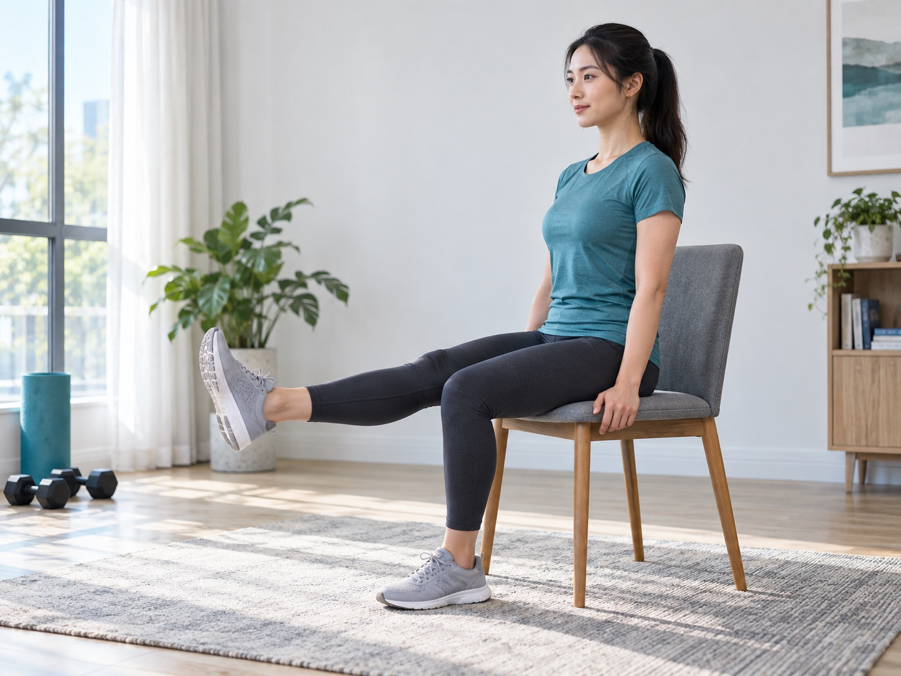
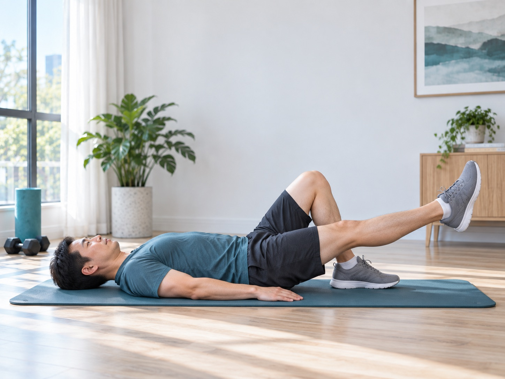
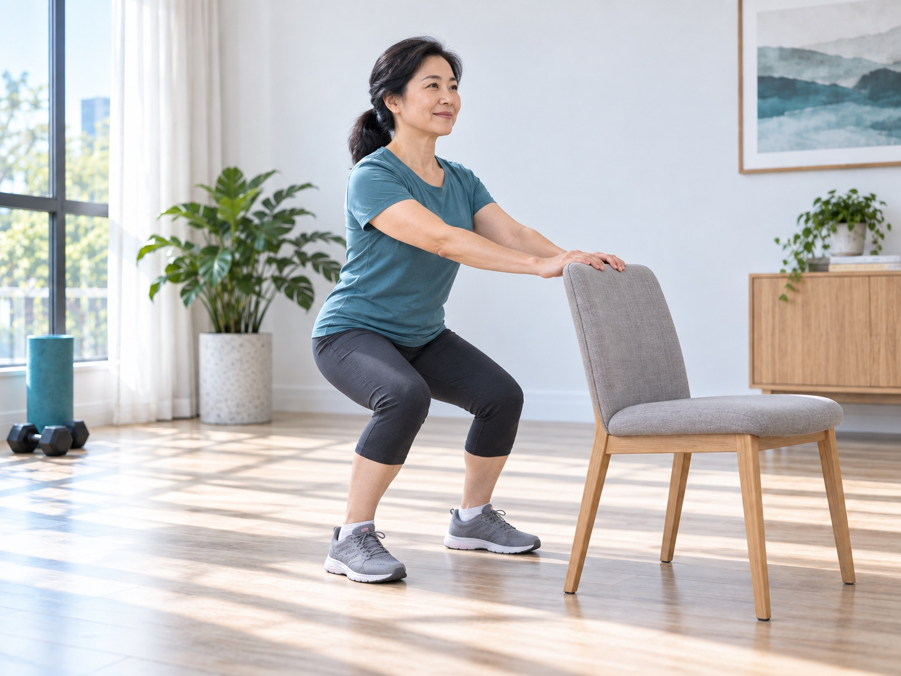
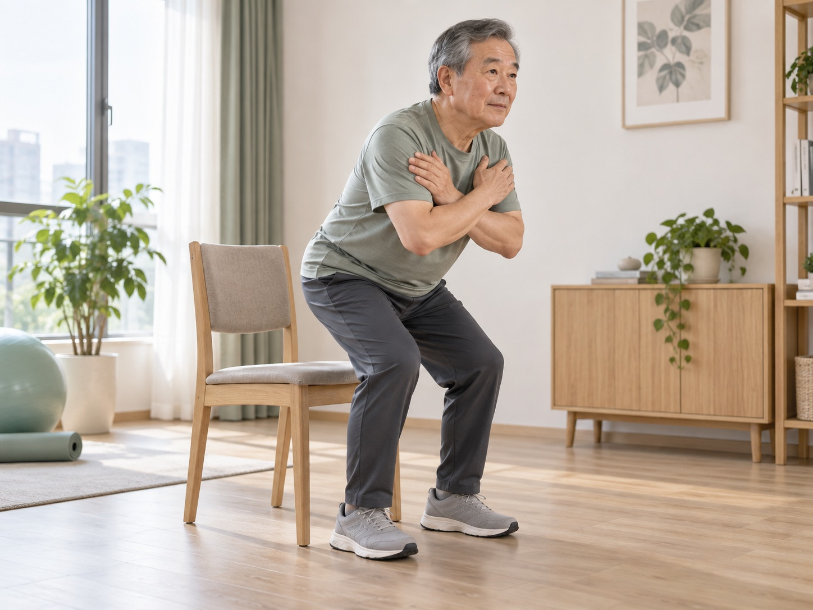

01
坐姿伸膝
坐稳 → 缓慢伸直患侧膝关节 → 保持 → 缓慢放下
- 完成次数
- 最大伸膝角度
- 顶点保持
- 抬起与下放速度

正在识别 · 右腿 第 1 组8 / 10这一组
刚才的提示
AI 负责每一次动作都有人看着；康复师负责方向对不对。两者缺一个，居家康复都容易练偏，或者练不下去。
康复师
评估后开训练方案：做哪些动作、几组几次、角度目标。远程看报告和录像，随时调训练量。
AI 陪练
摄像头识别身体关键点，算出关节角度，自动计次；动作不到位、太快、保持不够，当场提示。
不用一个「合格率」概括所有动作。每个动作单独判断：做了几次、角度到没到、停够没有、快不快。
坐稳 → 缓慢伸直患侧膝关节 → 保持 → 缓慢放下

02仰卧固定相机 → 膝关节保持伸直 → 抬腿 → 保持 → 控制下放

03扶稳椅背 → 屈髋屈膝下蹲 → 回到站立

04坐姿 → 身体前倾 → 离开椅子 → 完全站立 → 缓慢坐下
具体动作与评价标准待康复师确认。
01 · 实时纠错
大字和语音提示，离屏幕两三米也看得清、听得到。做对了也会告诉你。
02 · 看得见的进步
每次训练记录最大角度和保持时间，连成曲线。进步不再靠感觉。
03 · 康复师远程随访
康复师看报告、看录像、留言，直接在线调整你的方案。
04 · 每次训练都有报告
完成了几次、哪一次没到位、下次注意什么，一目了然。
最大伸膝角度 · 近 12 次
168°目标 175° 以上
第一次 151° → 今天 168°
与王康复师沟通
看了你昨天的录像，第 7 次放下有点快。今天下放默数两秒。
好的，今天膝盖比昨天轻松一些。
本次训练简报 · 坐姿伸膝
第 7、8 次顶点保持不足 3 秒
伸直到最高点后，心里默数三秒再放下。
已同步给王康复师
界面示意
界面示意，数据为虚构
手机或电脑自带摄像头，侧对镜头即可。
找出肩、髋、膝、踝的位置，算出关节角度。
每个动作一套独立规则：次数、角度、保持、速度。
当场大字和语音提示，练完生成训练简报。
动作和标准以康复师评估为准，系统不替代医生和康复师。
判断规则没有第二位康复师复核，就不能启用。
康复师可设疼痛提醒阈值；疼了立即停，并告诉康复师。
评估后在康复师端选动作、定组数和角度目标，发给你。没有康复师也可以先自选动作，之后再确认。
手机或电脑打开网页，侧对镜头。系统实时计次、量角度、提醒你哪里要调整。
报告和录像自动同步。康复师看到问题，留言或调整下一阶段的方案。
不需要。有摄像头的手机或电脑就行，侧对镜头，让髋、膝、踝都在画面里。
不能。康师复是训练辅助工具，不做医疗诊断。动作和标准以康复师的评估为准。
动作识别在你自己的手机或电脑上完成，训练过程中只把身体关键点的坐标发给服务器判断动作。训练结束后，无声录像会保存到你的账号，只有你和已关联的康复师能看。
立即停止，并通过在线沟通告诉你的康复师。摄像头测不出疼痛，系统不会替你判断。
可以先自选训练方向和动作体验，但自选不代表诊断，建议尽早关联康复师确认方案。